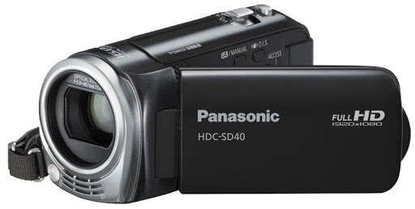

Цифрова камера або цифровий апарат - пристрій, що використовується для зйомки відео та створення фото-знімків
або ж обох, в якому світлочутливим матеріалом є матриця або кілька матриць, що складаються з окремих пікселів, сигнал з
яких представляється, обробляється і зберігається в самому апараті в цифровому вигляді. Це найпоширеніший пристрій при
створенні цифрових фотознімків. Більшість камер 21-го сторіччя є цифровими.
Незважаючи на функціональну схожість, цифрові
відеопристрої найрізноманітнішого призначення, такі як камери відеоспостереження і веб-камери, фотоапаратами зазвичай не
називаються, якщо не дозволяють зберегти знімки в самому пристрої або на вставленому в пристрій носієві інформації.